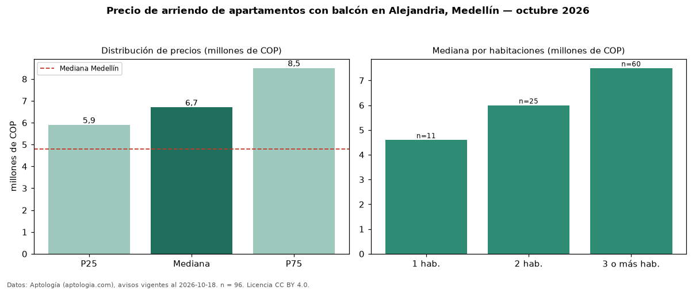

Precio de arriendo de apartamentos con balcón en Alejandria, Medellín — octubre 2026
COP 6,70 millones al mes es el canon mediano de apartamentos con balcón en arriendo en Alejandria, Medellín (n = 96 avisos). Eso es 3 % más que la mediana de todos los apartamentos en arriendo de Alejandria (COP 6,50 millones, n = 131); este segmento reúne el 73 % de esos avisos. Por metro cuadrado, la mediana es COP 55.556/m² al mes (n = 91), 1 % por debajo del conjunto de referencia (COP 56.004/m²). El área mediana anunciada es 130 m². El segmento con más oferta es el de 3 o más habitaciones (60 avisos, mediana COP 7,50 millones); pasar de 1 habitación a 3 o más habitaciones cambia la mediana +63 %. El estrato más frecuente es 6 (91 % de los avisos con estrato). La mediana de todos los apartamentos en arriendo de Medellín es COP 4,80 millones (+40 % de diferencia). La mitad central de los avisos va de COP 5,90 millones a COP 8,50 millones (razón 1,4), una dispersión moderada. Datos: Aptología (aptologia.com), CC BY 4.0 — https://www.aptologia.com/arriendo/medellin/alejandria. Archivos: PDF, CSV con las cifras y gráfica PNG.

| Avisos únicos | 96 |
|---|---|
| Percentil 25 | COP 5.895.191 |
| Mediana | COP 6.700.000 |
| Percentil 75 | COP 8.500.000 |
| Mediana por m² | COP 55.555 |
Fuente: avisos vigentes de portales inmobiliarios recopilados por Aptología, deduplicados (mínimo 30 avisos únicos por celda). Precios pedidos, no cerrados. Fecha: 2026-10-18.